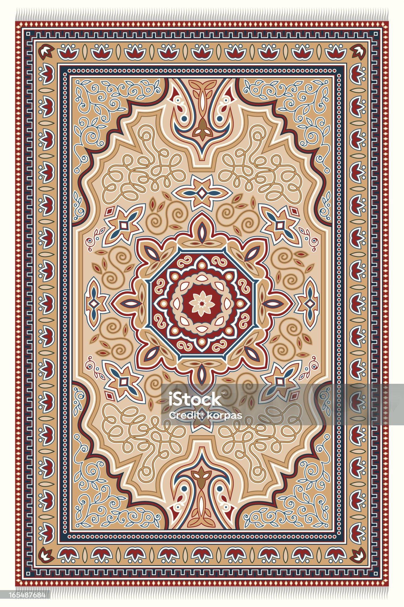

Sahara

Sahara -matto tuo ripauksen eksoottista tunnelmaa kotiisi. Sen hiekansävyinen pinta ja perinteinen kuvio luovat tilaan lämpöä ja kodikkuutta, kutsuen rentoutumaan ja nauttimaan.
Pituus: 240 cm
Hinta: 229 €
Väri: Beige, ruskea
Materiaalit: Puuvilla